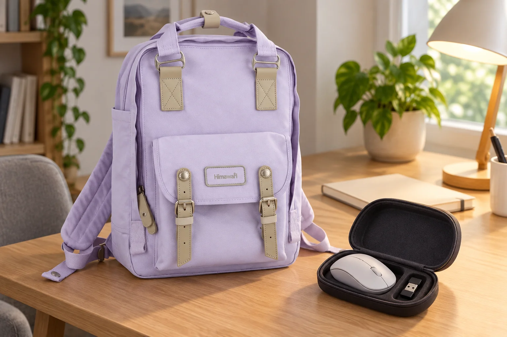

백팩 속 마우스, 버튼이 눌리지 않게 되담기

노트북을 닫고 나면 마우스를 파우치의 남는 틈에 넣게 됩니다. 그런데 뚜껑이 버튼을 누르거나 다른 물건이 휠 위에 놓인 채 가방이 닫힐 수도 있습니다. 책상에서 잘 쓰던 마우스를 이동할 때도 같은 상태로 두지는 않는지 살펴보세요. 어디에 넣을지를 정한 다음에는 마우스가 눌리지 않는 모양으로 되돌아갔는지 확인하는 일이 남습니다.
먼저 내 마우스의 이동 안내를 확인합니다
전원 스위치가 있는 제품이라면 제조사의 이동·보관 안내에 맞춰 정리합니다. 충전 케이블을 연결해 썼다면 해당 기기 안내에 따라 분리한 뒤 선과 마우스를 나눕니다. 마우스마다 연결 방식과 전원 처리가 다르므로 백팩에 넣는다는 이유로 모든 제품에 같은 방법을 적용하지는 않습니다. 가방을 닫기 직전에 스위치 위치를 찾기보다 책상 위에서 상태를 확인합니다.
수신기는 정해진 보관 위치로 돌려놓습니다
USB 수신기를 쓰는 마우스라면 사용을 마친 뒤 수신기의 위치도 함께 확인하세요. 마우스 안에 제조사가 마련한 보관 자리가 있다면 그 안내에 맞춰 사용하고, 없다면 케이스의 작은 칸처럼 정해둔 자리를 씁니다. 수신기를 버튼과 뚜껑 사이에 끼워두지는 않습니다. 수신기 없이 연결하는 제품에는 이 단계가 필요 없으므로 자신의 구성에 맞춰 정리하면 됩니다.
빈 케이스를 닫아본 다음 마우스를 넣습니다
먼저 빈 케이스의 여밈과 안쪽 모양을 봅니다. 마우스를 넣은 뒤에는 위쪽 공간과 버튼·휠의 위치를 대조하세요. 뚜껑을 닫으려면 마우스를 눌러야 하거나 지퍼가 유난히 당겨진다면 크기가 맞는지 다시 확인합니다. 마우스 위에 어댑터나 단단한 플러그를 올려 한꺼번에 닫지 않습니다. 특정 케이스를 쓴다는 것만으로 충격 보호가 보장되는 것은 아닙니다.
백팩에 넣은 뒤에도 케이스가 찌그러지지 않는지 봅니다
케이스를 넣을 자리는 평소 짐과 함께 확인합니다. 책이나 다른 파우치 사이에 눌려 케이스의 모양이 달라지면 위치나 짐의 양을 조정하세요. 참조 제품 No.194L의 외부 크기는 가로 28 × 세로 39 × 폭 15cm입니다. 이는 특정 마우스 케이스가 들어가는 포켓 치수가 아닙니다. 다음에 꺼냈을 때 수신기가 정한 자리에 있고 버튼 주변에 물건이 끼지 않았는지 다시 볼 수 있도록 정리해두세요.
참고·안내
- Himawari No.194L 제품 정보
- 실제 Himawari No.194L 제품을 참조한 AI 연출입니다. 마우스·수신기·케이스는 별도 소품이며, 백팩의 전용 구성품이나 기기 보호 성능을 나타내지 않습니다.
자주 묻는 질문
무선 마우스는 모두 USB 수신기를 챙겨야 하나요?
연결 방식은 제품마다 다릅니다. 본인이 쓰는 마우스의 구성과 제조사 안내를 확인하고, 실제 사용하는 수신기가 있을 때만 보관 위치를 정하세요.
백팩의 앞주머니에 마우스를 바로 넣어도 되나요?
주머니 크기만 보지 말고 주변 짐이 버튼과 휠을 누르는지 확인하세요. 기기의 보관 안내에 맞는 케이스가 필요하다면 실제 크기와 여밈을 대조해 따로 준비합니다.